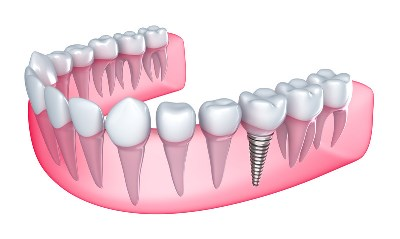

The possibility of missing teeth without damaging the remaining teeth today is certainly the goal we strive for in dentistry. Implantology forms part of modern clinical dentistry. Long-standing practice has shown that implant implantation is a routine procedure lasting thirty minutes, it is completely painless and is done in local anesthesia. Implants solve the lack of one or more teeth, wherein the implant serves as a carrier for future prosthetic replacement.
When does the implant decide?
- Lack of a tooth
- If one tooth is missing, the implant installation is the best solution, because in that case we keep two neighboring teeth that should be grinded if a classic bridge is made.
- Lack of more teeth
- If more teeth are missing, the implants serve as bridge supports.
- widauth any teeth.
1. A fixed solution is a bridge on the implants, a minimum of 6-8 implants is inserted into one fork and then a circular bridge is made
2. Mobile solution is a prosthesis on implants; a smaller number of implants of standard dimensions or so-called mini implants that hold the prosthesis is installed. The prosthesis carried by the implants is much more stable than the usual prosthesis but can still be removed for cleaning.
During the implantological intervention, all the latest modern methods are used: imediate installation, immediate loading, regenerative techniques.